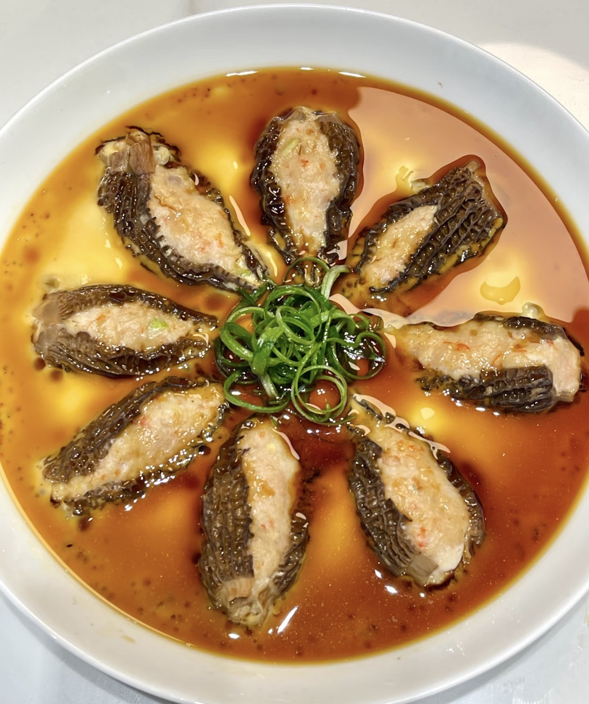
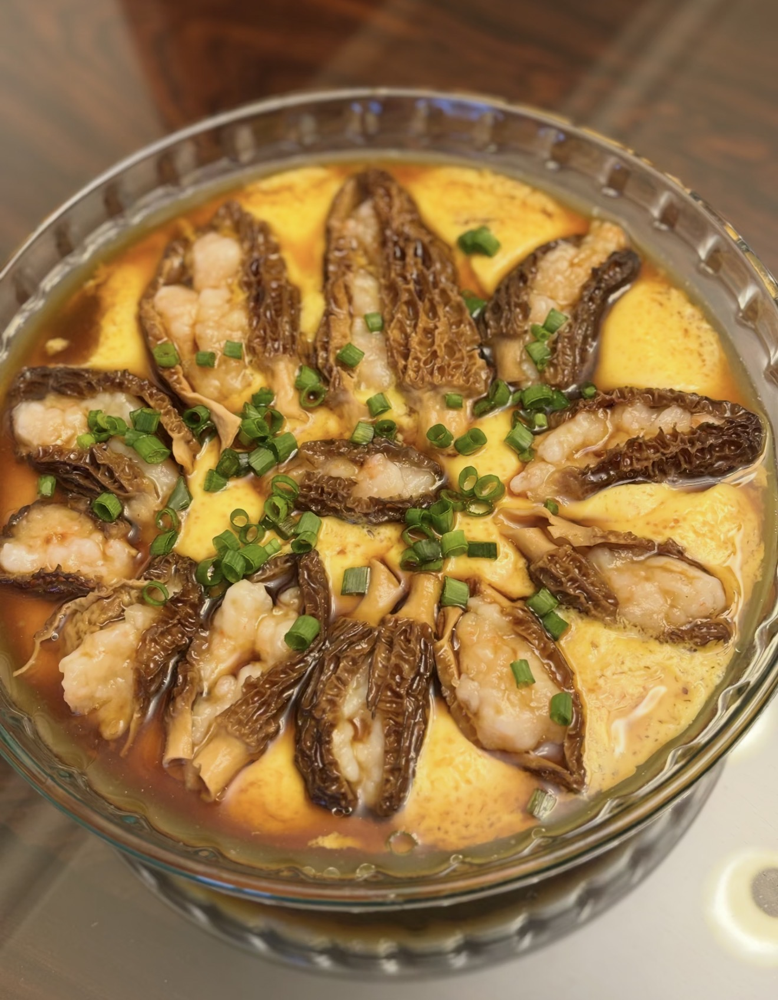

Morel Shrimp Steamed Egg
Silky steamed egg with shrimp and morel mushrooms.
Ingredients
- Eggs
- Water
- Morel mushrooms
- Shrimp paste
- Salt
- Scallions
- Soy sauce
- Oil
Directions
- Soak mushrooms.
- Mix eggs with water and salt.
- Strain for smooth texture.
- Steam until partially set.
- Add shrimp-filled mushrooms.
- Steam until fully cooked.
- Top with scallions and seasoning.
- Serve hot.